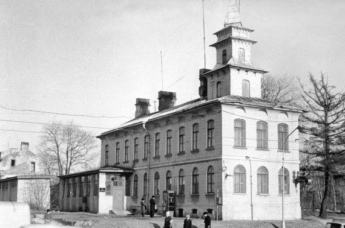

Примечательно, что это было одно из самых первых железобетонных зданий во всей России.
Современным жителям проспекта Тореза, я, думаю, трудно представить, что когда-то здесь рядом паслись коровы, а в оранжереях выращивал специальные лекарственные травы специалист по тибетской медицине Пётр (Жамсаран) Александрович Бадмаев, тот самый, что был лекарем семьи последнего русского императора. Именно здесь находились его загородный особняк и дачное хозяйство.
Наверное, в эпоху великих потрясений он не раз вспомнил, как в 1905 году к нему в этот дом на Поклонной горе вбежали запыхавшиеся студенты-революционеры и попросили спрятать их от преследования полиции.
Бадмаев не отказал. Дал им аптечную форму и посадил к медным ступам, в которых толкли лекарства. Когда растерянная полиция, видевшая, где скрывались преследуемые ею революционеры, удалилась ни с чем, сердобольный лекарь помог и так уже спасенным бедолагам еще и деньгами, дабы они могли переправиться за границу.
Спустя двенадцать лет победившие революционеры арестовали его как преследователя царского режима. Правда, потом отпустили. Но дачу на Поклонной горе решили конфисковать. В депеше комиссара Кудрина говорилось: «Прошу вашего ходатайства о выселении доктора Бадмаева, проживающего на Поклонной горе, так как этот Бадмаев — чистый монархист, а монархисты не должны находиться при товарищах красноармейцах…»
Дача, где когда-то добродушный доктор помог укрыться революционерам, была реквизирована. До наших дней сохранилось удостоверение, выданное ему председателем жилищной комиссии земельного отдела Шувалово-Озерковского совета рабочих и крестьянских депутатов 11 августа 1919 года.
Удостоверение сие гласило: «Дом (без инвентаря) по Выборгскому шоссе на Поклонной горе на основании удостоверения хозяйств. Подотдела местного Совета от 11 августа за № 457 реквизирован для нужд 2-й батареи 2-го тяжел. арт. див.».
Многие старинные дома окружены легендами. И особняк Бадмаева, конечно, не исключение. Многие утверждали, что именно здесь был сожжен труп убиенного Григория Распутина.
В здании, где якобы сожжен труп Григория Распутина, с 1950-х годов расположилось 36-е отделение милиции, и просуществовало там несколько десятилетий. А исторический особняк, ставший свидетелем самых переломных событий в жизни страны, в 1981 году был снесен.